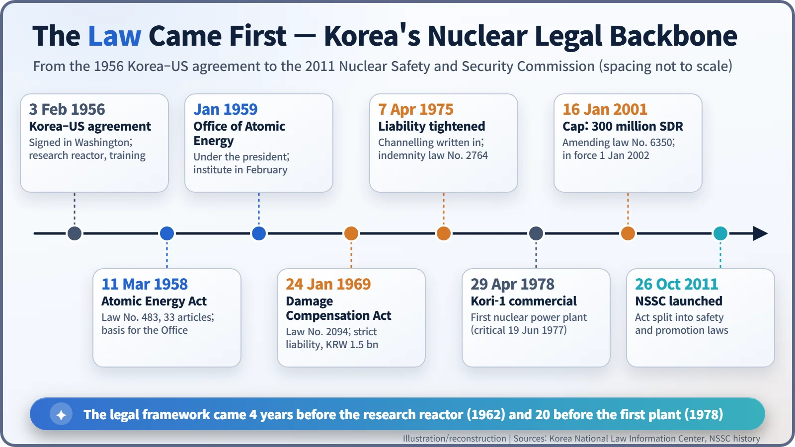
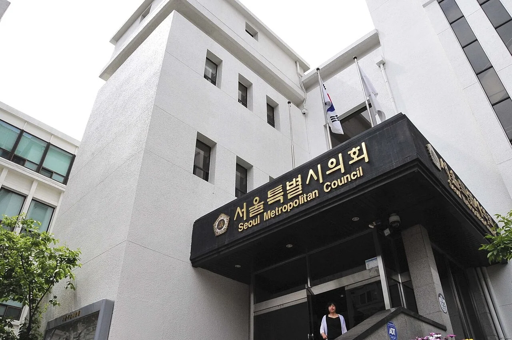
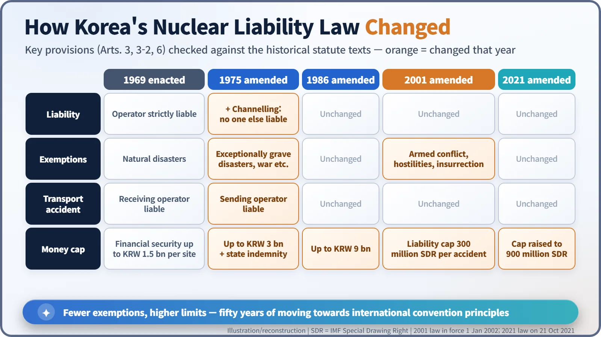

Nuclear History · 243
No Reactor Yet, but Already an Age Limit — Korea's Atomic Energy Act (1958) and Nuclear Damage Compensation Act (1969)
The law came before the hardware: an atomic energy act four years before the first research reactor, and a liability law that grew stricter as power plants approached.
South Korea passed an Atomic Energy Act in March 1958, four years before its first research reactor went critical and twenty years before its first nuclear power plant. In January 1969 it added a Nuclear Damage Compensation Act built on strict liability and compulsory financial security, and over the following five decades it tightened that law step by step, from channelling liability to the operator in 1975 to a liability cap of 900 million SDR in 2021.
An age limit before there was a reactor
"No one shall have a person under 18 years of age manage, use or handle radioactive isotopes … nuclear reactors …"
That is Article 26 of South Korea's Atomic Energy Act, promulgated on 11 March 1958 (quoted here in translation). At the time the country did not have a single reactor. Its first research reactor would not go critical until 1962, four years later, and its first nuclear power plant, Kori-1, would not start commercial operation until 1978, twenty years later. There were no operators and no machines, yet the rules were already on paper. Korean nuclear energy began in an unusual order: the law came before the hardware. [1]
A blueprint in 33 articles
The Atomic Energy Act, Law No. 483, was short: 33 articles in nine chapters. Its skeleton, though, was surprisingly complete. It created an Office of Atomic Energy under the president, and inside it an Atomic Energy Commission, a secretariat and an Atomic Energy Research Institute. The commission had five members, and the law insisted that "at least three" of them be scientists or engineers. [1]
Acquiring, producing, importing, exporting or holding nuclear materials and radioactive isotopes, and building or operating a reactor, required designation or a licence from the head of the Office. Radiation harm to people and the public was to be "prevented to the greatest possible extent". Breaking the licensing rules could mean up to two years in prison or a fine of up to 300,000 hwan, the currency of the day. Under this act the Office of Atomic Energy opened in January 1959, and a research institute and a research reactor followed. [1] [5]

The second question: who pays if something goes wrong?
While Korea had only a small research reactor, liability was a fairly abstract question. As plans for a power station took shape in the late 1960s, it became a practical one. If a serious accident injured neighbours or contaminated their property, who would pay, and how much? The United States and Western Europe had been building laws and treaties around that question for more than a decade.
Korea's answer was the Nuclear Damage Compensation Act (Law No. 2094), promulgated on 24 January 1969. It had 22 articles, built on three ideas. [2]
- Strict liability. The nuclear operator pays even if it was not at fault. Victims do not have to spend years proving negligence.
- Mandatory financial security. An operator may not run a reactor until it has arranged insurance, a government indemnity contract or a cash deposit. The amount was set by decree, up to KRW 1.5 billion per site. That figure was a ceiling on the money set aside in advance, not a cap on liability. The security requirement did not apply when the government itself ran the nuclear business.
- A state backstop. If damages exceeded the security, the government would provide "necessary assistance", and a Nuclear Damage Compensation Council could mediate settlements in disputes.
Set side by side, the provisions look a lot like Japan's 1961 compensation act. That is the author's comparison of the two texts; it has not been confirmed from Korean legislative records.

As the power plant came closer, the law got tighter
On 7 April 1975, with Kori-1 under construction, the act was substantially rewritten. It now spelled out channelling: liability flows to the operator alone. In the words of the revised Article 3, "no person other than the nuclear operator … shall be liable" (translation). Victims no longer had to chase component suppliers; they could claim against one operator. [3]
The ceiling on financial security doubled to KRW 3 billion, and on the same day a separate law on government indemnity contracts (Law No. 2764) was enacted. The exemption for "natural disasters" was narrowed to "exceptionally grave" natural disasters, war and similar upheavals. Responsibility for accidents during shipments between operators also moved from the receiving operator to the sending one. [3]
The changes kept coming. In 1986 the security ceiling rose to KRW 9 billion. An amendment passed in 2001 and in force from 1 January 2002 narrowed the exemptions further, to armed conflict, hostilities, civil war and insurrection, and introduced, for the first time, a liability cap of 300 million SDR per accident. The SDR, or Special Drawing Right, is an accounting unit of the International Monetary Fund. A 2021 amendment, in force from 21 October 2021, tripled the cap to 900 million SDR, about KRW 1.5 trillion according to press reports at the time. [3] [4]

Separating the rule-makers from the promoters
The 1958 act put promotion and regulation in one law and one agency. That arrangement lasted for more than half a century. In 2011 the act was split into a Nuclear Safety Act and a Nuclear Promotion Act, and on 26 October 2011 the Nuclear Safety and Security Commission (NSSC) was launched under the president; since 2013 it has sat under the Prime Minister. The NSSC also administers the compensation act today. [5]
One notable feature: according to the World Nuclear Association, Korea has not joined the international liability conventions (Paris, Vienna or the Convention on Supplementary Compensation), yet its domestic law adopted their core principles — strict liability, channelling to the operator, a liability cap and compulsory financial security. The law arrived before the reactors, and each time a new stage of the nuclear programme approached, the law was tightened a little more. [6]